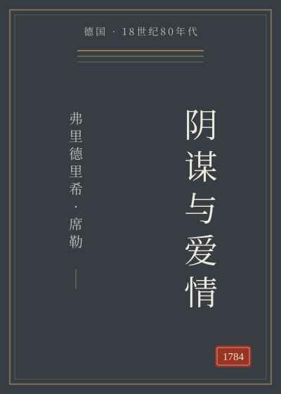
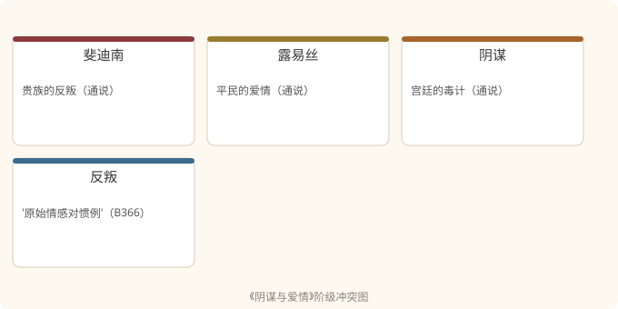

阴谋与爱情
一、基本信息
| 作者 | 弗里德里希·席勒 |
|---|---|
| 成书/出版 | 1784年（Britannica B366：Kabale und Liebe (1784)） Friedrich Schiller — Encyclopaedia Britannica（百科全书） |
| 国别/地区 | 德国 |
| 时代 | 近代 · 18世纪80年代 |
| 体裁 | 戏剧 |
| 语言 | 德语 |

《阴谋与爱情》阶级冲突图（主题·结构图）
二、创作背景
Britannica（B366）：'the revolt of elemental human feeling against the artificialities of convention'——'the vigour of its social criticism'。
Britannica（B366）：贵族青年与平民之恋——'combine to make Kabale und Liebe great theatre'。
题材（通说待核）：斐迪南与露易丝——宫廷阴谋下的毒酒悲剧。
三、内容脉络
（B366）'原始人性情感对人工惯例的反叛'——贵族青年与平民少女之恋（B366：love of a young aristocrat for a girl of humble origin）。
（通说待核）宰相之父的阴谋与毒杀结局。
四、主要人物表
| 人物 | 身份 | 说明 |
|---|---|---|
| 斐迪南 | 贵族青年 | （通说待核，B366未载名） |
| 露易丝 | 乐师之女 | （通说待核，B366未载） |
五、主题与艺术特点
- 阶级壁垒与爱情（B366：social criticism）。
- '人工惯例'的反抗（B366）。
- 市民悲剧的德语高峰（通说待核）。
六、影响与评论
- Britannica：'great theatre'（B366）。
Friedrich Schiller — Encyclopaedia Britannica（百科全书） - Britannica：曼海姆驻场剧作家时期作品（B366 语境）。
Friedrich Schiller — Encyclopaedia Britannica（百科全书）
七、阅读建议
难点
- 18世纪德国等级社会。
- 市民悲剧（bürgerliches Trauerspiel）传统（通说待核）。
- 《阴谋与爱情》中译本（人民文学等——通说待核）。
- 德文原版（公有领域）。
席勒代表作；与《强盗》对读。
八、待核实
- 斐迪南/露易丝人名核对（B366未载）。
- 1784年首演细节待核。
- '市民悲剧'归类说法待核。